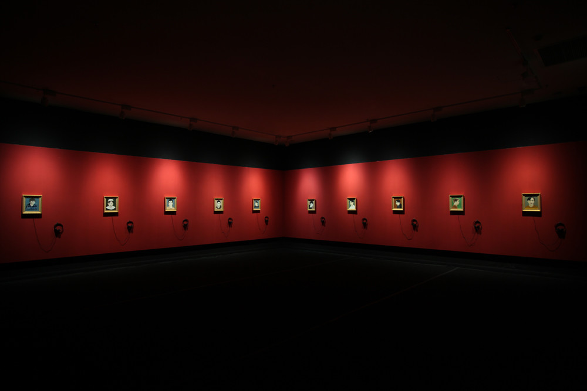
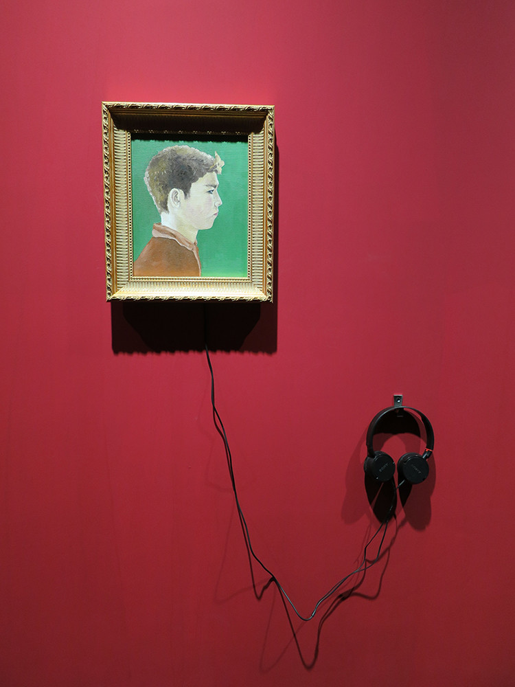
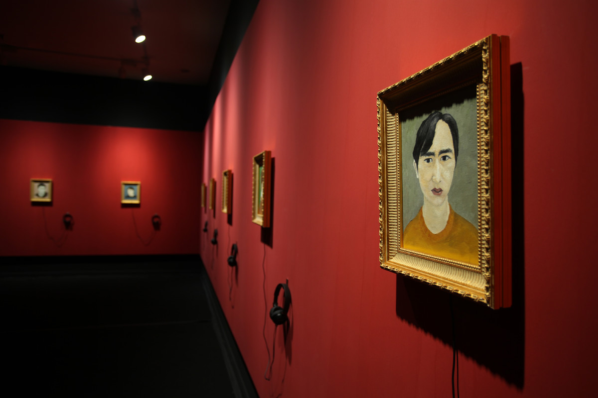
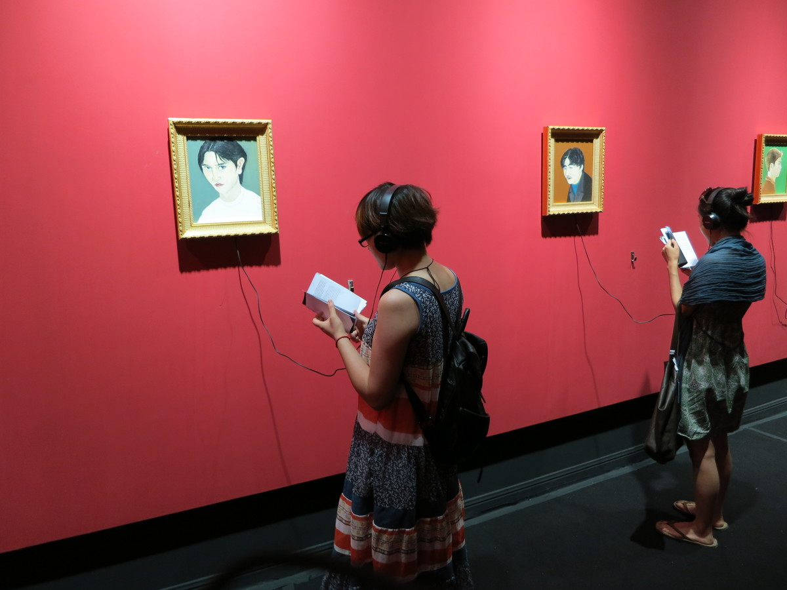

望京少年

油画尺寸40x34cm， 10幅， 木质外框 ，2013
在我生活的望京街区（北京）有一个维吾尔族少年，很多人见过他，并且坚定的认为他是个小偷。我找了十个见过他的居民，请他们给我描述这位少年的长相，再将其画出来。
维吾尔族是生活在中国新疆天山以南的少数民族，信仰伊斯兰教。
从《伊斯坦布尔画家》到《望京少年》，对于石玩玩而言，绘画不再是单纯的语言表述与再现事物的工具，它成为了艺术家手中的道具、证物或沟通途径。绘画的动因也渐变成为对绘画的功能和对象的质疑。《望京少年》中的少年形象是艺术家通过采集不同人差异化的声音描述，参照绘制出的肖像。石玩玩试图打开绘画单向表达和逆向阅读的方式，让绘画从一开始变得开放：参与者的一件，绘制对象的不确定性、艺术家的主观介入以及观者的阅读经验一同构成了作品。——李杰
我觉得《望京少年》可以分成两部分，一部分是他们的叙述，这个叙述带有非常强烈的社会性，介于调查和刑侦之间，最后形成特别有意思的社会性叙述的样本。然后他又进行了一个虚构工作。反过来讲，社会性叙述里面有非常强烈的虚构成分，它是从某种人，比如说维族小偷这种原型叙述出发的东西，不一定有很那么强的记录的成分在里面，却又非常强烈的另一种“虚构”，也许这件作品就是两种虚构的一种互动。——杨北辰

A4当代艺术中心，成都

A4当代艺术中心，成都

A4当代艺术中心，成都